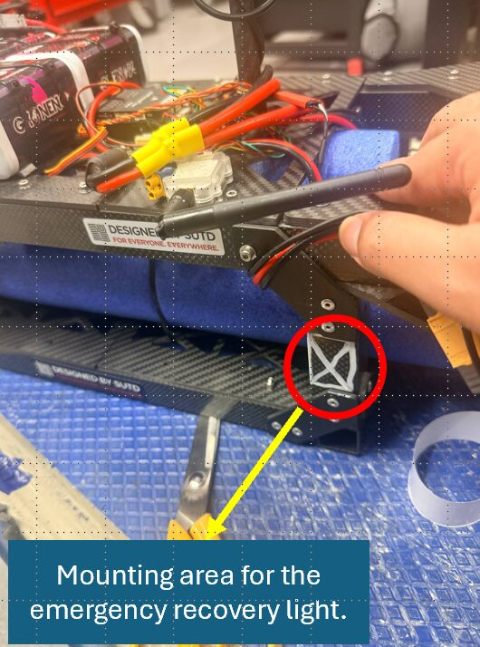
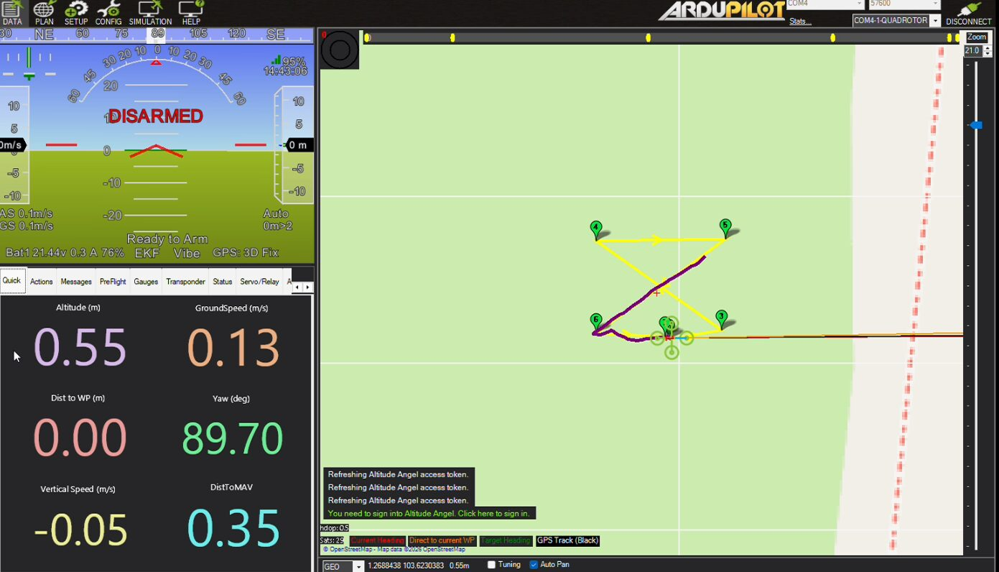
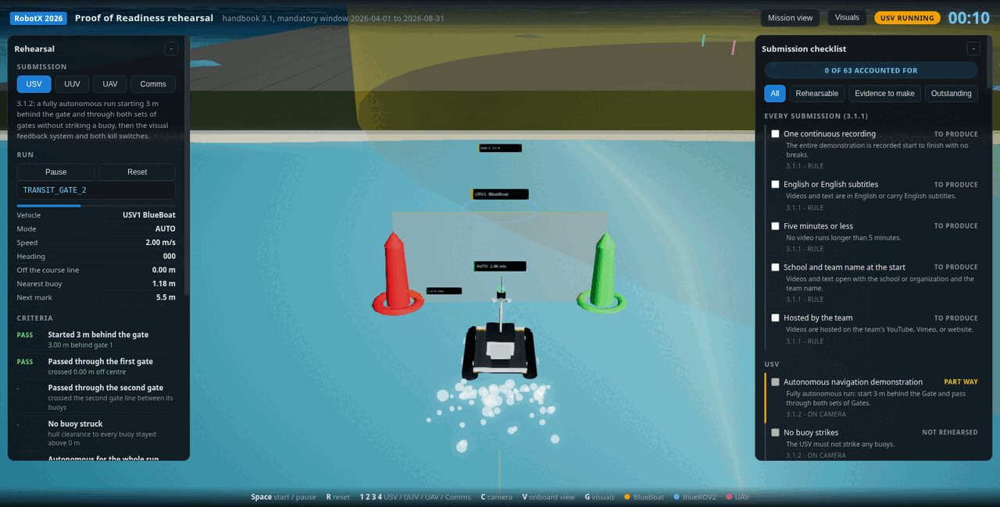
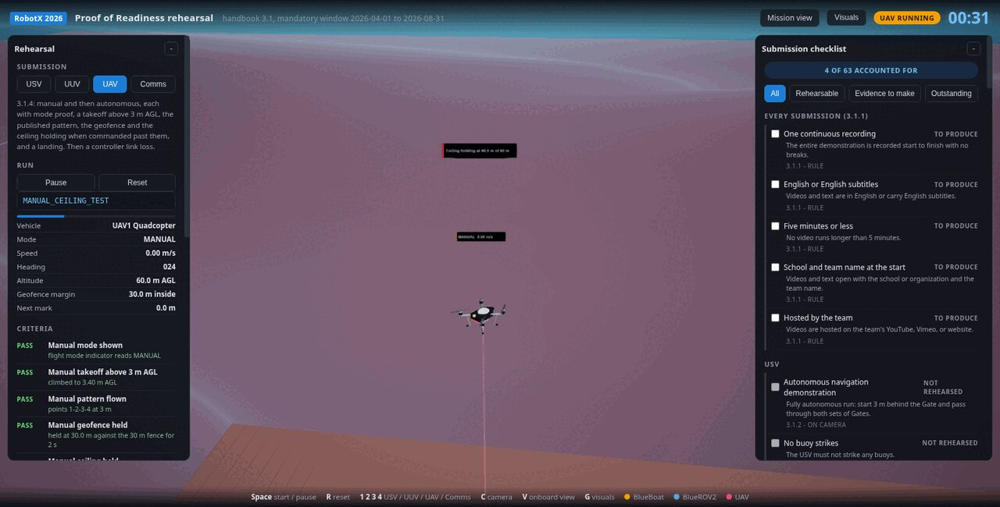

Proof of readiness
Nothing a team owns goes in the water at RobotX 2026 until its readiness submission has passed. Handbook section 3.1 asks for a recorded autonomous run per domain, drawings and photographs of the safety systems, and a log of a real run start sequence. This is what we sent and what backs it.
Status
Submissions are reviewed on a rolling basis and come back as pass or fail, and a failed one can be resubmitted until the window closes. The mandatory window for a surface vehicle plus one other domain closed on 31 August 2026; the optional third system closes on 12 October 2026.
| Submission | Handbook | Contents | State |
|---|---|---|---|
| Surface vehicle | 3.1.2 | Autonomous gate run, kill switch drawings, tow and lift points, shrouds, control block diagram | Submitted |
| Underwater vehicle | 3.1.3 | Submerged gate run, kill switch drawing, tow and lift points, shrouds, beacon mounting, buoyancy | Submitted |
| Aircraft and pilot | 3.1.4 | Information package, manual and autonomous flights, safety behaviour, controller compliance | Submitted |
| Communications | 3.1.5 | RF emitter worksheet and a run start log from RoboNation's test server | Submitted |
The full requirement list runs to 63 items across 3.1.1 to 3.1.5. We track all of them in the rehearsal tool below, which marks the ones a rehearsal can judge and leaves the rest as evidence a person has to produce.
Surface vehicle, 3.1.2
The demonstration is a fully autonomous run starting 3 m behind the gate, through both sets of gates, without striking a buoy, with steady control throughout. The upload set is the kill switch wiring, the marked tow and lift points with their harness, the propeller shrouds, and a block diagram showing that manual control works with the laptop switched off.
The 3.1.2 course built to the handbook's dimensions, with the gate crossings, the clearance to the nearest buoy and the mode judged as the run goes.
Underwater vehicle, 3.1.3
The run starts 3 m behind a 2 m gate hung 1 m below the surface. The vehicle submerges, passes under the gate, circles a marker 10 m beyond it and returns through the gate, without breaching and without anything attached to it floating on the surface.
Depth is drawn as a column from the hull to the surface and turns red if the vehicle comes within 0.3 m of breaching. The turn around the marker is swept and captioned with the degrees completed.
Editor note, remove before submission
Add the submitted underwater run video and the safety photographs for this section. The page currently shows the rehearsal only.
Aircraft and pilot, 3.1.4
The aerial package is the largest one. It carries an information package for airframe and pilot review, a flight demonstration in both manual and autonomous modes with mode proof, a takeoff above 3 m, the published pattern, geofence and ceiling compliance when commanded past them, and a landing. Then the safety systems: the emergency recovery light mounting area, the marked handling areas, behaviour on link loss, low battery, mission abort and geofence, and the dedicated controller.



The rehearsal flies both modes, then commands the aircraft 15 m past the fence and 20 m above the ceiling. The criterion passes only when the aircraft can be seen refusing to go, which is what the video has to show.
The flights themselves are on the aircraft page: manual, autonomous, geofence, link loss and buoyancy.
Communications, 3.1.5
This one asks for two things: the RF emitter worksheet for every radio we bring, and logs showing a run start sequence per handbook 3.4.10 with at least two vehicles in the declaration. We ran it against RoboNation's own rc-test server, so the log we submitted was written by their code, decoding our traffic against their schema.
| Step | What happens | Evidence |
|---|---|---|
| 1 | Console connects to the course broker | One MQTT connection carrying every subscription and publication |
| 2 | Console subscribes to the course and command topics | Implied by step 3: the retained course could not arrive otherwise |
| 3 | Course configuration received and validated | Course ALPHA, pinger 25 kHz, five point closed boundary |
| 4 | Run declaration published | Sequence 1, three vehicles, a tier per task, a five point aerial geofence |
| 5 | Heartbeats for every declared vehicle | 2 Hz per vehicle while the fleet is held in manual |
| 6 | Each vehicle reports autonomous | All three transition once armed and holding position |
| 7 | RoboCommand publishes the run start | Released on the third autonomous report: run 1, declaration sequence 1 |
| 8 | Console verifies the declaration sequence | Matched against what we sent. A run start quoting anything else is logged and ignored |
The console output from that run:
16:25:38 | INFO | RoboCommand connected: team=SUTD
16:25:38 | INFO | RoboCommand: course ALPHA pinger=25000 Hz boundary=5 points
16:25:38 | INFO | RoboCommand: RunDeclaration seq=1 vehicles=USV1,UUV1,UAV1
16:25:49 | SUCCESS | RoboCommand: RunStart run_id=1 declaration_seq=1 verified
PASS MQTT connection
PASS retained RxCourse received
PASS RunDeclaration published
PASS at least two vehicles declared
PASS RunStart received
PASS RunStart quotes declaration_seq=1
Run 1 started on course ALPHAThe log also demonstrates the parts of 3.4 that are easy to get wrong: per vehicle sequence counters independent of the team request counter, complete heartbeat telemetry including flight phase for the aircraft, correct vehicle typing on each topic segment, and a real tier per task rather than an unknown value.
Rehearsing a submission
Each readiness course is small, specified in the handbook to the metre, and expensive to build twice. So we built all four in the simulator and fly the demonstration before we film it. Every criterion carries the rule it applies and the number it measured, so a pass is a measurement rather than an opinion.


The checklist on the right of that page carries all 63 requirements with their section and the kind of evidence each one wants. Requirements backed by a file on disk are marked from disk rather than from a checkbox, and the whole thing exports as a markdown checklist for the submission review.